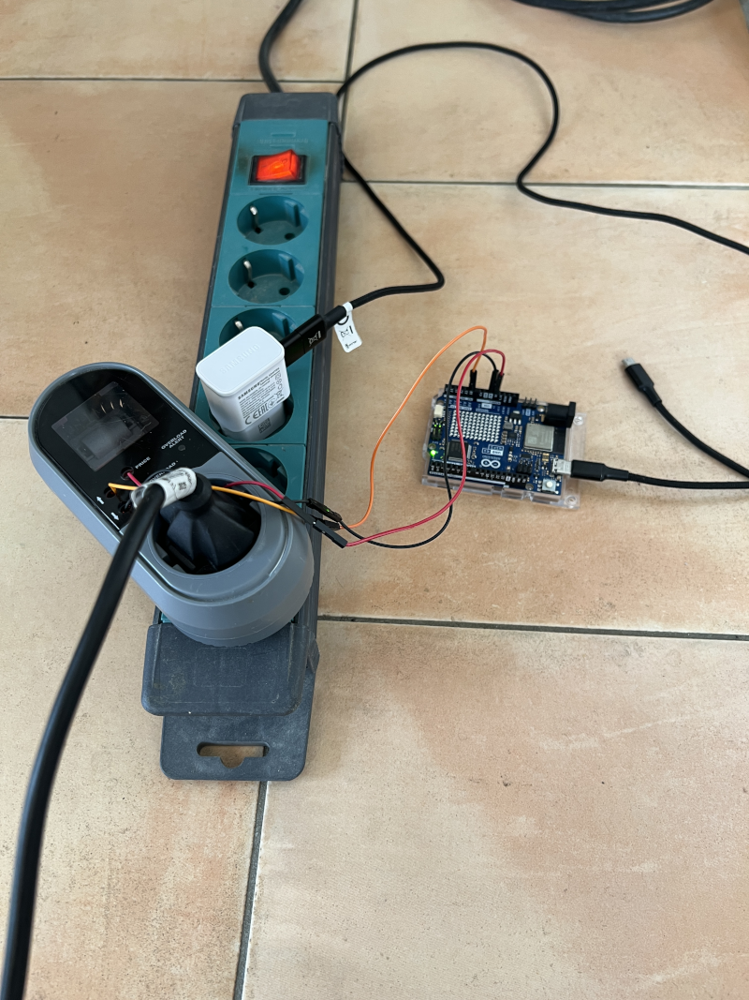
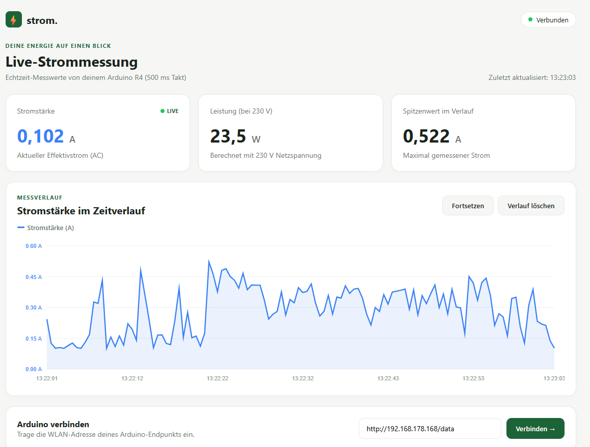

My First Arduino Project (100% Built with AI)
An Arduino Uno R4 WiFi with a current sensor

The Webpage
The webpage is hosted locally via the Arduino's built-in Wi-Fi module.
It updates automatically every 500 milliseconds.

Project Details
- Development Time: Both the Arduino code and the hosted webpage were created in under 60 minutes using AI.
- Hardware: Arduino Uno R4 WiFi, ACS 712 Current Sensor
- Features: Real-time current tracking
← Back to Portfolio